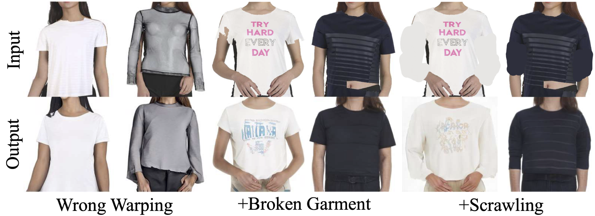
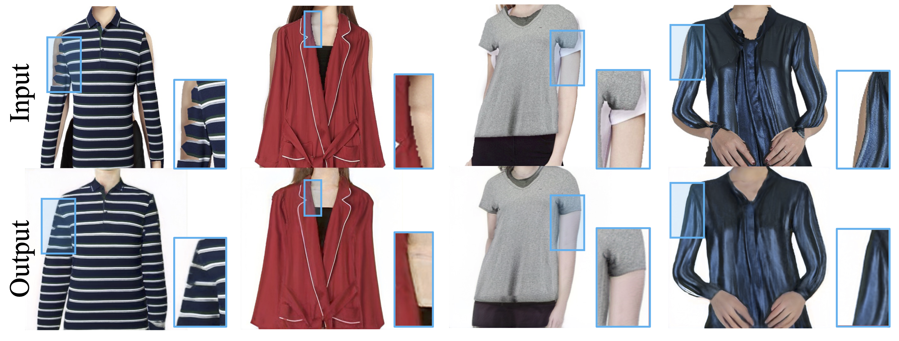

In this paper, we propose a cheap yet scalable weakly-supervised method called Deep Generative Projection (DGP) to address the scenario of generating images of models on product clothes.
Lying in the heart of the proposed method is to imitate the process of human predicting the wearing effect, which is an unsupervised imagination based on life experience rather than computation rules learned from supervisions. Here a pretrained StyleGAN is used to capture the practical experience of wearing.
Experiments show that projecting the rough alignment of clothing and body onto the StyleGAN space can yield photo-realistic wearing results. Experiments on real scene proprietary model images demonstrate the superiority of DGP over several state-of-the-art supervised methods when generating clothing model images.
Here we show two examples of our DGP method. From left to right: The coarse aligned image, the image generated by the encoder-generator, and the image generated by the DGP process (combined with the projection step, the semantic search step and the pattern search step).
Although the encoder fails to preserve all semantics and details of the original images, it always generates plausible outputs.
The mistakes like missing parts of clothing, wrong key point alignments, and zigzag clothing boundaries are easily corrected in the final results.
Comparison on the CMI and MPV datasets. The supervised competitor methods are basically less appealing, and perform especially poorly on complicated clothing like coats.

@InProceedings{Feng_2022_CVPR,
author = {Feng, Ruili and Ma, Cheng and Shen, Chengji and Gao, Xin and Liu, Zhenjiang and Li, Xiaobo and Ou, Kairi and Zhao, Deli and Zha, Zheng-Jun},
title = {Weakly Supervised High-Fidelity Clothing Model Generation},
booktitle = {Proceedings of the IEEE/CVF Conference on Computer Vision and Pattern Recognition (CVPR)},
month = {June},
year = {2022},
pages = {3440-3449}
}
@inproceedings{gao2021shape,
author = {Gao, Xin and Liu, Zhenjiang and Feng, Zunlei and Shen, Chengji and Ou, Kairi and Tang, Haihong and Song, Mingli},
title = {Shape Controllable Virtual Try-on for Underwear Models},
booktitle = {Proceedings of the 29th ACM International Conference on Multimedia},
pages = {563--572},
year = {2021}
}